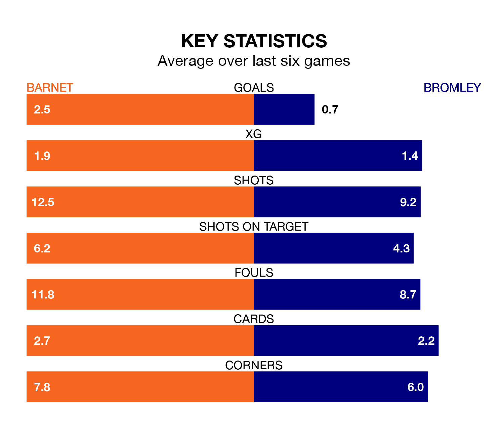

Two of the National League's top sides face each other at the Hive Stadium in Tuesday's late kick-off, when second-placed Barnet host third-placed Bromley.
Barnet have picked up 24 wins and seven draws from 43 games so far this season, and sit five points above the visitors going into the 7.45pm match.
The Ravens, meanwhile, have won 20 and drawn 14 of 42, picking up 74 points.
With 84 goals in 43 games so far this season, Barnet are the league's second-highest scorers with 2.0 goals per game. And they are conceding fewer than average, letting in 58 goals at a rate of 1.3 per game.
Bromley, meanwhile, are average scorers, with 1.5 goals per game. They have conceded 1.1 goals per game.
In the last 10 years, Barnet and Bromley have played each other on 12 occasions. Barnet won four of them, Bromley five, and they drew three times.
On average, the Bees scored 1.3 goals and the Ravens 1.6 in those matches.
Their last meeting was on March 9, when Bromley won 2-0 at home.
The Bees are in reasonable form in the National League, with three wins and two draws from their last six games.
With two wins and three draws over that period, the Ravens's form is slightly worse – they have taken nine points from 18, compared to the home team's 11.
Barnet's last match was on Saturday, a 2-2 draw against Maidenhead United, with Callum Stead and Nicke Kabamba getting the goals for the Bees.
Bromley drew 1-1 with Woking last time out, on April 1, with Kido Taylor-Hart on the scoresheet.
Updated: 14:47 (UTC), 09/04/24